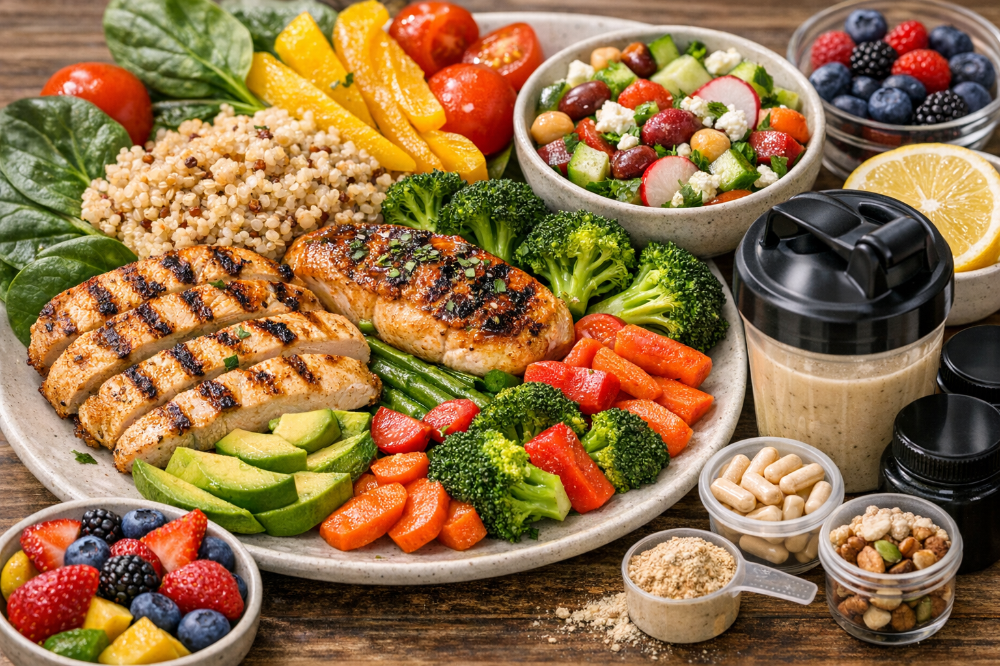
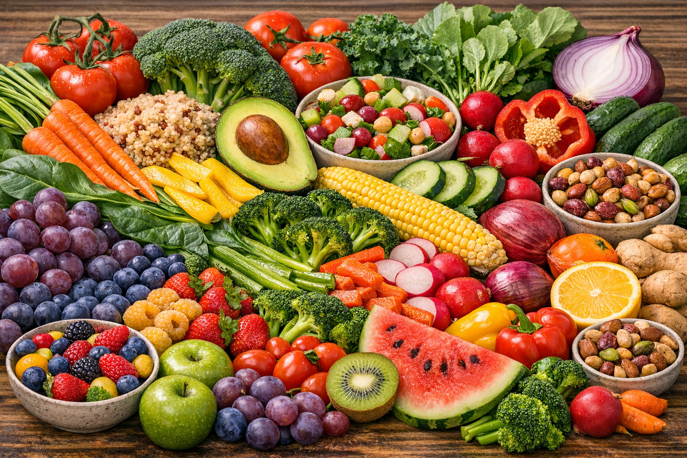
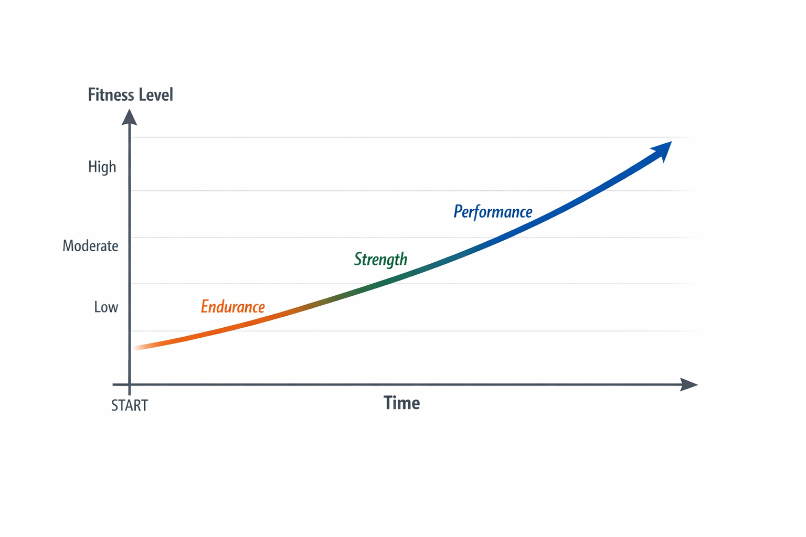

The Power of Nature: How Outdoor Workouts Boost Your Mind and Body
Discover the myriad benefits of taking your fitness routine outside, from fresh air to mental clarity. Learn how to incorporate more nature into your active lifestyle...
Read MoreYour source for expert insights, motivational stories, delicious recipes, and all things wellness. Dive into our articles to empower your fitness and health journey!

We often talk about carbs, proteins, and fats – the macronutrients. But what about the unsung heroes of our diet, the tiny powerhouses packed into every bite of colorful produce? We're talking about micronutrients: vitamins, minerals, and phytonutrients that orchestrate thousands of vital bodily functions. They don't provide energy themselves, but without them, your body can't properly *use* the energy from your macros, recover from workouts, or even fend off illness.

Each color in fruits and vegetables often signifies a different set of powerful compounds. Think deep reds of berries for antioxidants, vibrant oranges of carrots for Vitamin A, leafy greens for Vitamin K and folate, and the rich blues/purples of eggplant for anthocyanins. Eating a diverse range of colors isn't just aesthetically pleasing; it's a strategic way to ensure you're getting a broad spectrum of these essential micronutrients.
It’s not just about hitting your protein target for muscle gain; it’s about having the magnesium to allow those muscles to contract efficiently, the B vitamins to metabolize that protein effectively, and the Vitamin C to repair the tissues after. A diet rich in diverse, colorful, whole foods ensures that every system in your body, from your muscles to your mood, is running optimally.
So, next time you're planning your meals, ask yourself: have I painted my plate with a rainbow today? Your body – and your performance – will thank you for it!
Discover the myriad benefits of taking your fitness routine outside, from fresh air to mental clarity. Learn how to incorporate more nature into your active lifestyle...
Read MoreIt's not just what you eat, but how you eat it. Explore practical tips for cultivating mindful eating habits that can transform your relationship with food...
Read More
Feeling stuck? This article dives into advanced training techniques, recovery tips, and mindset shifts to help you overcome plateaus and achieve new personal bests...
Read MoreJoin the DESTI FITNESS & HEALTH community and receive our latest articles, tips, and exclusive offers directly in your inbox.